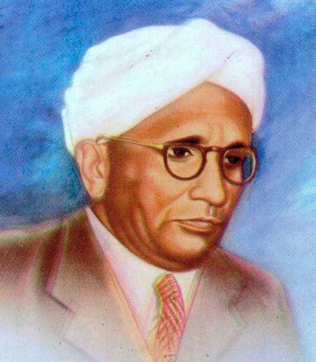
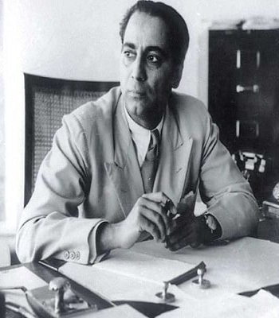
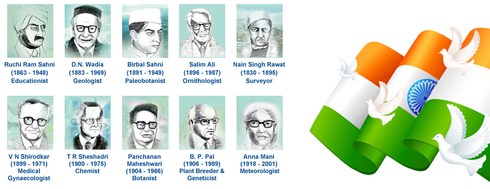
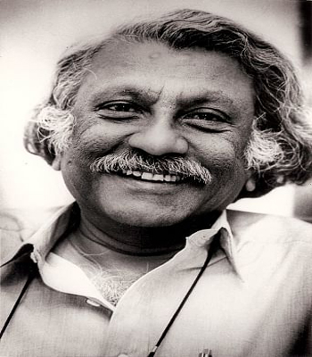
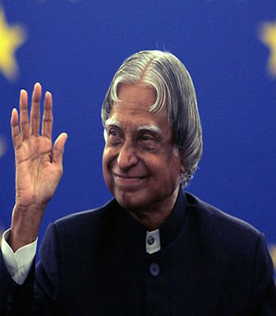

|  |
Dr. CV Raman
Chandrasekhara Venkata Raman won the Nobel Prize for Physics in 1930 for his pioneering work on scattering of light. Born in Tiruchirapalli on November 7, 1888, he was the first Asian and first non-White to receive any Nobel Prize in the sciences. Raman also worked on the acoustics of musical instruments. He was the first to investigate the harmonic nature of the sound of the Indian drums such as the tabla and the mridangam.
He discovered that, when light traverses a transparent material, some of the deflected light changes in wavelength. This phenomenon is now called the Raman scattering and is the result of the Raman effect.
In October 1970, he collapsed in his laboratory. He was moved to a hospital and the doctors gave him four hours to live. He survived and after a few days refused to stay in the hospital as he preferred to die in the gardens of his Institute (the Raman Research Institute in Bangalore) surrounded by his flowers. He died of natural causes on 21 November 1970.
|
Dr. Homi J. Bhabha
He was the first person to become the Chairman of the Atomic Energy Commission of India. Having started his scientific career in nuclear physics from Great Britain, Bhabha returned to India and played a key role in convincing the Congress Party’s senior leaders, most notably Jawaharlal Nehru, to start the ambitious nuclear programme.
Bhabha is generally acknowledged as the father of Indian nuclear power. But few people know that he was absolutely against India manufacturing atomic bombs, even if the country had enough resources to do so. Instead he suggested that the production of an atomic reactor should be used to lessen India’s misery and poverty.
He died when Air India Flight 101 crashed near Mont Blanc on 24 January 1966. Many possible theories of the crash came up including a conspiracy theory in which the Central Intelligence Agency (CIA) is involved in order to paralyze India’s nuclear program.
|
 |
|  |
|  |
Dr. Venkatraman Radhakrishnan
Venkatraman Radhakrishnan was born on May 18, 1929 in Tondaripet, a suburb of Chennai. Venkataraman was a globally renowned space scientist and a member of the Royal Swedish Academy of Sciences.
He was an internationally acclaimed Astrophysicist and also known for his design and fabrication of ultralight aircraft and sailboats.
His observations and theoretical insights helped the community in unraveling many mysteries surrounding pulsars, interstellar clouds, galaxy structures and various other celestial bodies. He died at the age of 81 in Bangalore.
|
Dr. APJ Abdul Kalam
Avul Pakir Jainulabdeen Abdul Kalam, born on October 15, 1931 is an Indian scientist who worked as an Aerospace engineer with Defence Research and Development Organisation (DRDO) and Indian Space Research Organisation (ISRO).
Kalam started his career by designing a small helicopter for the Indian Army. Kalam was also part of the INCOSPAR committee working under Vikram Sarabhai, the renowned space scientist. In 1969, Kalam was transferred to the Indian Space Research Organization (ISRO) where he was the project director of India’s first indigenous Satellite Launch Vehicle (SLV-III) which successfully deployed the Rohini satellite in near earth’s orbit in July 1980.
He also served as the 11th President of India from 2002 to 2007. Kalam advocated plans to develop India into a developed nation by 2020 in his book India 2020. He has received several prestigious awards, including the Bharat Ratna, India’s highest civilian honour..
|
 |